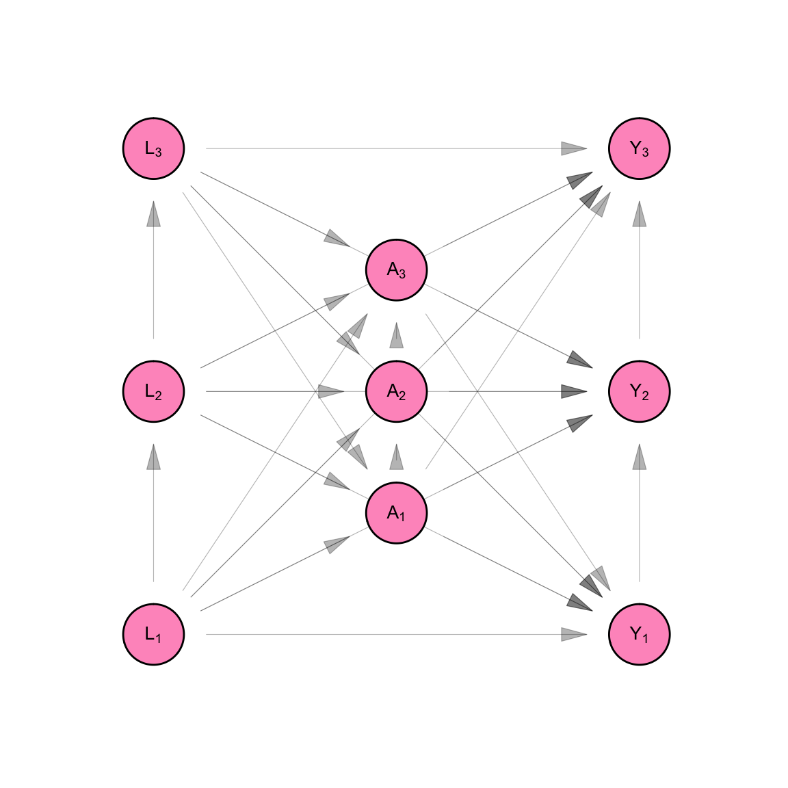
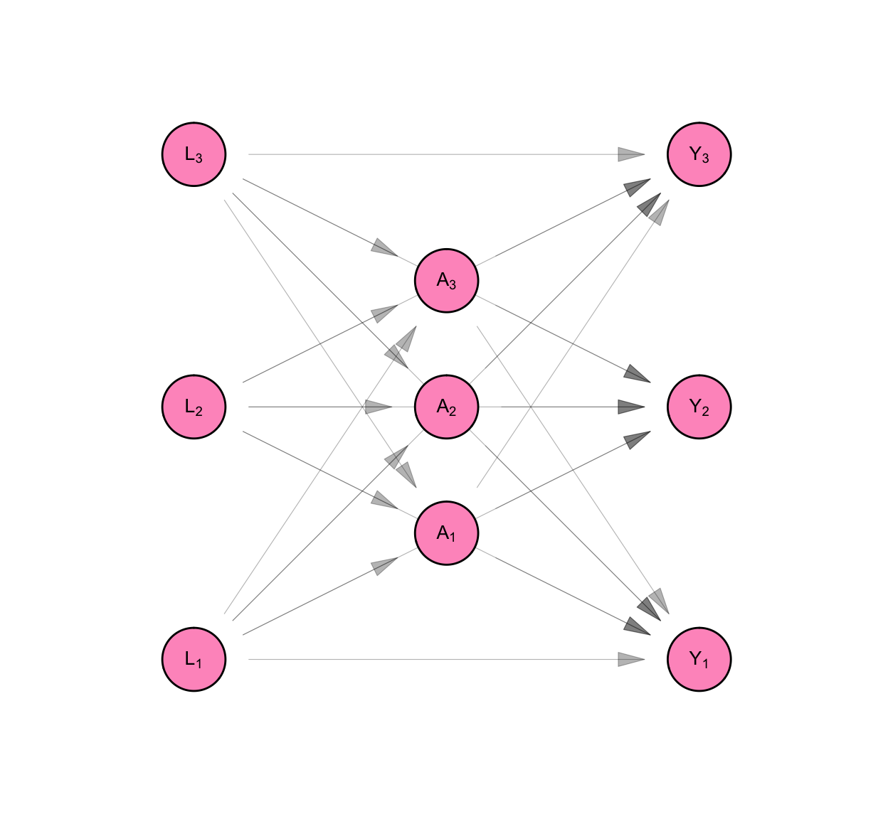
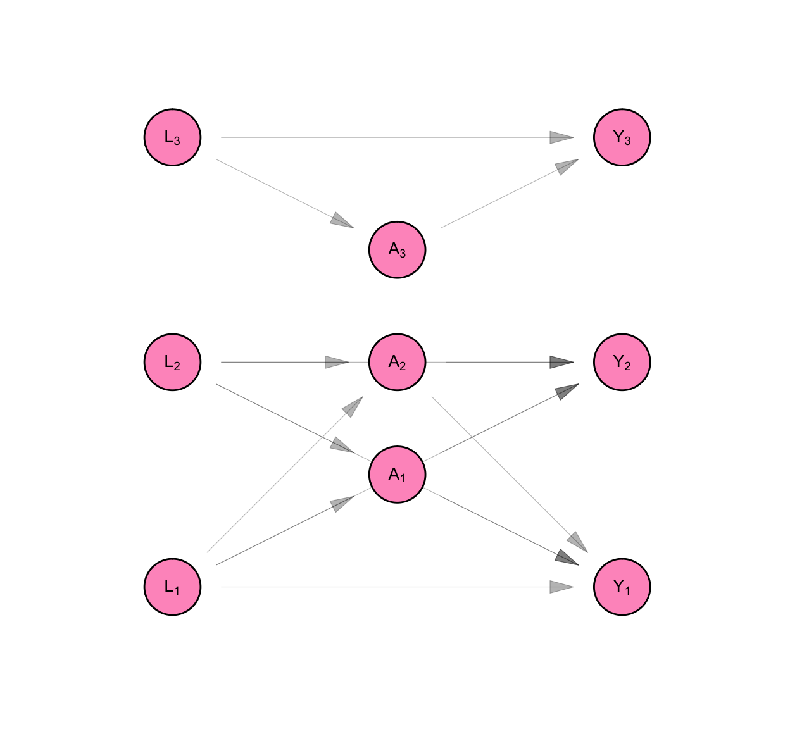
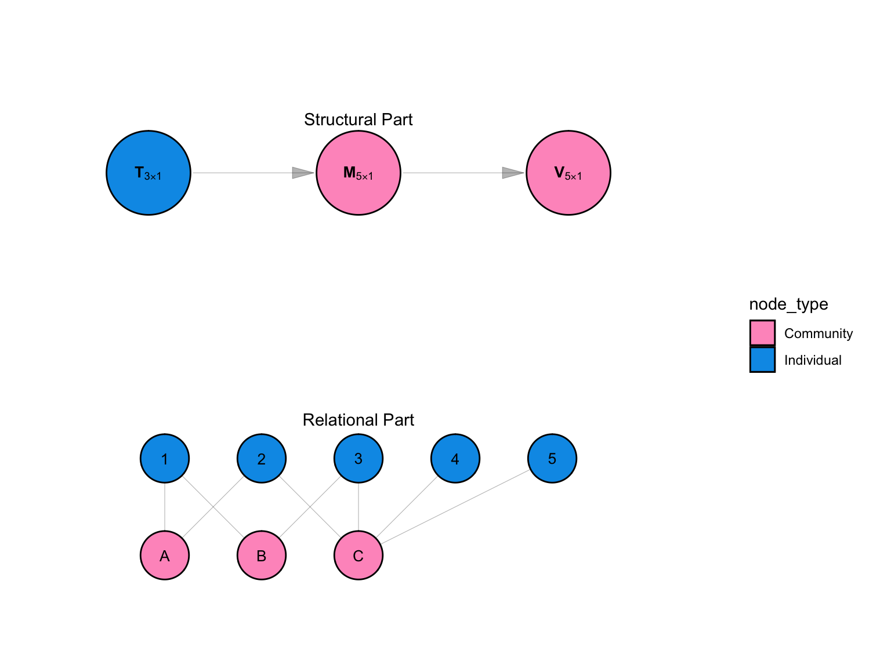
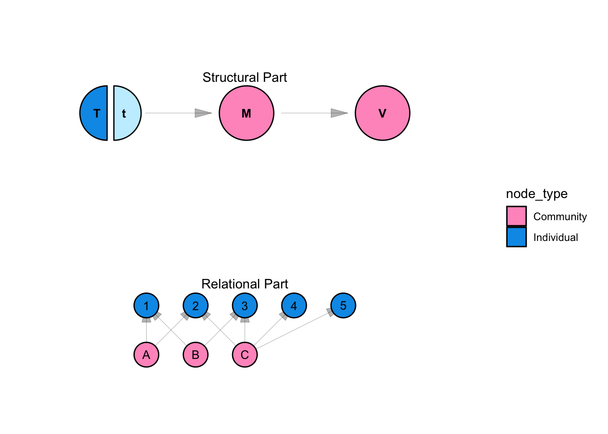
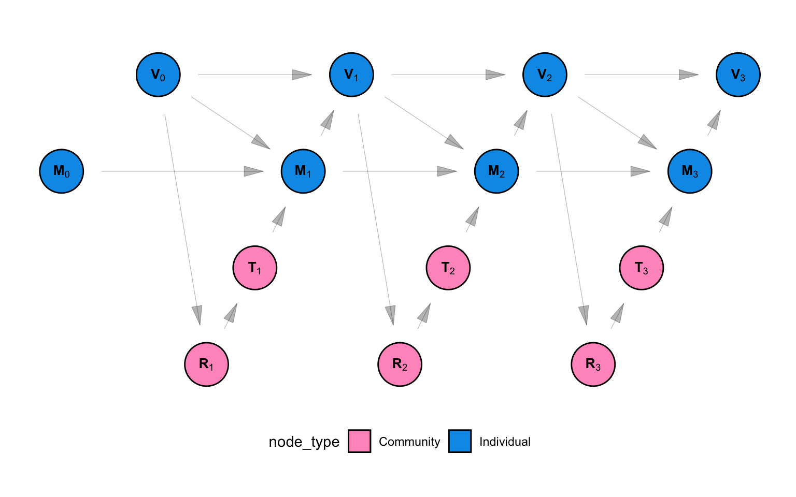
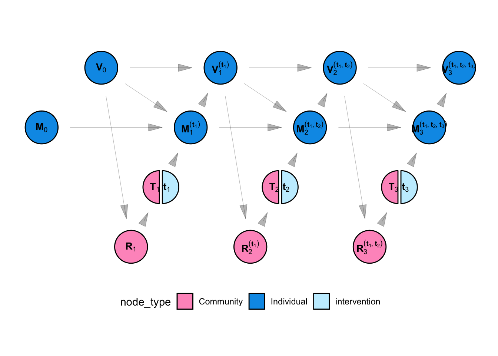

Code
targets::tar_source("R_functions")targets::tar_source("R_functions")targets::tar_source("R_functions")In this appendix we contextualize the main analysis in the MPX NYC project in a framework we name Social and Spatial Network Analysis with Causal interpretation (SNACC). The SSNAC framework can be used to guide the collection, management, analysis, and causal interpretation of network data. It offers guidance on conceptualizing and organizing spatial and social data as network data (Appendix A) and provides tools for descriptive analysis (Appendix B).
In this section we elaborate the “causal interpetation” aspect of SSNAC. We define SNACC as a set of straight-forward extensions of the currently dominant framework for conducting causal inference with observational data in epidemiology. We begin by giving an overview of the dominant approach, which we will call “classic causal inference”. We extend this system to situations where data are characterized by interdependence of observational units rather than independence, naming this system “network causal inference”. Finally, we accommodate social and spatial data simultaneously in a framework we named SSNAC. In each case, we describe the assumptions and implications of each system, illustrating with worked examples.
Classic causal inference, as articulated by Robins (1986), Hernán (2018), and others helps us to sharpen epidemiologic reasoning by providing a template for conducting thought experiments about population health. Typically in these thought experiments, the researcher reasons about the likely effect of some hypothetical intervention on some hypothetical outcome in some hypothetical population. Through transparent statistical assumptions, the quantities of interest in the thought experiment are calculated as a function of observed or observable data.
For instance, consider a hypothetical intervention where every person in the United States receives free, unlimited access to healthcare. Under classic causal inference, we can ask whether the prevalence of diabetes would change if we implemented the intervention. We can even ask about the extent of change and estimate that using data that have already been observed. The classic causal inference framework allows this firstly by making causal assumptions about the relationship between healthcare and diabetes prevalence and secondly by stating the hypothetical quantities we are interested in, and thirdly to estimate those quantities using data we have or can collect about access to healthcare, diabetes prevalence, and any factor that determine both access and prevalence.
A strong assumption made almost universally by practitioners of classic causal inference is that of independence between observational units or groups of observational units. In our opening example, this assumption holds that one person’s access to healthcare does not affect any other person’s diabetes risk. It would imply that the diabetes risk for a married man who does not know how to cook, for instance, would not at all be affected by improvements in health literacy experienced by his wife who cooks for the household. The assumption of independence runs counter to our intuitions about social life. Humans are networked - our lives are defined by our relationships with others.
The choice of adopting the independence assumption or not has profound implications for how we think about our inferential goals. In the frequentist tradition of statistics, the engine of uncertainty is repetition. We imagine that an experiment could be repeated over and over again and we summarize its behavior across those repetitions. We do not often consider what exactly we mean by experiment and by repetition, though we make this distinction each time we decide how to analyse repeated-measures data.
An example clarifies: Consider a situation with two people, Jake and Thabo, who each toss the same coin once at time 1 and again at time 2. There are several ways of parsing this situation into “experiment” and “repetition”. We could say that we are conducting: - one experiment called “coin toss” and repeating it four times - two experiments called “Thabo tosses a coin” and “Tumi tosses a coin” and repeating each experiment twice - two experiments called “coin toss at time 1” and “coin toss at time 2” and repeating each experiement twice - four experiments called “Thabo tosses a coin at time 1”, “Thabo tosses a coin at time 2”, “Tumi tosses a coin at time 1”, and “Tumi tosses a coin at time 2 and not repeating any of them.
The choice between these interpretations turns on the experimenters prior beliefs about coin tossing: Does the likelihood of a head or tail change over time? Does it change based on the person tossing the coin? And does the result of one person’s coin toss affect the result of another’s? This kind of decision-making is at the core statistical modelling, particularly when analysing longitudinal data. Yet, in practice, the modelling decision to categorize people or groups of people as independent of each other is so well-entrenched that it is often represented as a minimum condition of doing any valid causal quantitative research. Unlike coins, however, there is a mountain of evidence and experience showing that interdpendence is the rule rather than the exception as far as people are concerned. Our goal in this appendix and project is to offer alternative ideas and tools for causal inference that allow us to learn from interdependence rather than avoid it in pursuit of clear causal reasoing. We can have both clear reasoning, and an understanding of interdependence.
In crude terms, our approach involves moving from a framework where, as a rule, we consider the coin toss example one experiment, rather than break it up into four (based on our theoretical understanding of how coin flips work). i.e. Rather than define a scalar random variable to represent a measure made on \(n\) individuals, we will define a vector-valued random variable of length \(n\) and assume that some of the entries in that random variable are correlated. But why would a researcher want to do that when asymptotic theory requires us to have as many repetitions as possible for valid statistical inference? How can we conduct valid inference and quantify uncertainty when we always have a sample size of 1?
Briefly, we can avail ourselves of asymptotic theory by making the assumption of no-spillover between observations, which is a weaker version of the independence between observational units assumption. No spillover means that one person’s outcome can not directly affect another person’s outcome. This assumption is weaker than the independence assumption. We further assume that the causal relationships between and within individuals are homogeneous in some specific ways, allowing our estimates to benefit from having more observational units, even if they all comprise one observations in terms of the statistical model. As it turns out that under certain homogeneity assumptions, asymptotic theory can be used to improve estimates in a growing vector of inter-related observations, whereas it is usually applied to a growing collection of vectors of equal length.
In the sections that follow, we describe classic causal inference, network causal infernce, and the SSNAC framework, each time discussing the assumptions, causal model, causal estimands, add causal identification and estimation strategy for the framework. Finally, we describe the MPX NYC outbreak response analysis presented in the main report using the SSNAC framework and end with a brief summary of the appendix.
targets::tar_source("R_functions")targets::tar_source("R_functions")We are interested in settling an argument among friends about the relationship between dressing in formal wear and job opportunities. One friend thinks that dressing formally clearly brings more job opportunities; everyone she knows who dresses formally has many more opportunities than people who dress casually. The other friend thinks that what really brings job opportunities is currently having a job. In their reasoning, having a job causes people to dress formally and causes people to have job opportunities, but dressing formally does not in itself improve opportunities. We conduct a study to try investigate.
We recruit three people, Person 1, Person 2, and Person 3. Person 1 and Person 2 are married to each other. Person 1 and Person 3 are newly acquainted colleagues. Say Person 1 has job status \(L_1\), Person 2 has job status \(L_2\) and Person 3 has job status \(L_3\). Each of these variables can only take on two values: “employed vs. unemployed”. Similarly we define \(A_i\) as Person \(i\)’s dress (formal vs. informal), and \(Y_i\) as their job opportunities (high vs. low). The job status measurement (\(L_i\)) precedes dress (\(A_i\)) in time, and dress precedes job opportunities (\(Y_i\)).
targets::tar_source("R_functions")A non-parametric structural equation model is a system of equations which relates all the entries in a given vector-valued random variable with each other. It does so without specifying parametric functions for each equation in the system.
An example of such a model is shown by Equation C.1. In this set of equations, values that are produced by equations higher up in the list are the arguments of equations lower down on the list. The functions \(f_*\) are deterministic functions whose form we do not necessarily know. The arguments \(U_*\) represent error terms - random variables which are independent of each other within and across observational units.
Whereas parametric models, for instance, a linear regression model with normally distributed errors, are characterized by their probability density functions, non-parametric models of this type are usually characterized by their conditional independencies. i.e. for a realization \([X_1, X_2, X_3, X_4, X_5]\) of some statistical model \(F\), an example of conditional independency could be:
\[ X_1 \perp X_3 | X_2, X_4 \]
Non-parametric structural equation models are usually represented using the Directed Acyclic Graph (DAG), which show the relationships between the structural equations in the model. The DAG shown in Figure C.1, for instance, represents the model defined by Equation C.1. DAGs encode the conditional independencies that characterize non-parametric structural equation models. Using a DAG and a set of rules called D-separation (Hernán and Robins 2021), it is possible to read the minimum set of conditional independencies that imply all the conditional independencies that characterize the model.
Conditional indpendencies are indicated by missing edges in the DAG. If we made no assumptions at all about the causal process in Example 1 except the time-ordering of measurements, we could represent our data using Equation C.1. Since there are no missing edges between nodes in the Figure C.1, the structural equation model represents any possible joint distribution between the variables in the DAG - there are no conditional independencies.
make_dag("fully_connected") |>
plot_swig(node_radius = 0.2) +
scale_fill_mpxnyc(option = "light") +
theme_mpxnyc()
\[ \begin{aligned} L_1 &= f_{L_1}(U_{L_1}) \\ L_2 &= f_{L_2}(U_{L_2}, L_1) \\ L_3 &= f_{L_3}(U_{L_3}, L_1, L_2 ) \\ A_1 &= f_{A_1}(U_{A_1}, L_1, L_2, L_3) \\ A_2 &= f_{A_2}(U_{A_2}, L_1, L_2, L_3, A_1) \\ A_3 &= f_{A_3}(U_{A_3}, L_1, L_2, L_3, A_1, A_2) \\ Y_1 &= f_{Y_1}(U_{Y_1}, L_1, L_2, L_3, A_1, A_2, A_3) \\ Y_2 &= f_{Y_2}(U_{Y_2}, L_1, L_2, L_3, A_1, A_2, A_3, Y_1) \\ Y_3 &= f_{Y_3}(U_{Y_3}, L_1, L_2, L_3, A_1, A_2, A_3, Y_1, Y_2) \\ \end{aligned} \tag{C.1}\]
But the most flexible model is not the most useful one. To fully characterize this system using observed data, we would need to estimate 9 functions using one observation of the 9-dimensional joint distribution that gave rise to the participant’s observations. It would not help to recruit an additional person to the study because that would add three new equations to the model and we would have the problem of estimating 12 functions using one observation of a 12-dimensional joint distribution.
Epidemiologists take several approaches to to simplify this system of equations by making assumptions that leave them with fewer functions to estimate and more observations per function. They add restrictions to the model. In the next few sections, we will discuss the restrictions made under classic causal inference, network causal inference, and the SSNAC framework. In each case, simplifying the system of equations equates to deleting some of the arrows in the DAG shown in Figure C.1 (or equivalently, deleting some arguments from the functions in Equation C.1), or assuming that some of the functions in the system are identical to each other.
targets::tar_source("R_functions")Under classic causal inference, we assume that observations are independent and identically distributed. We review these assumptions, naming them slightly differently for the purpose of comparing them with the assumptions made in subsequent sections. In each case, we divide assumptions up into independence assumptions (assumptions that delete arrows from the DAG) and homogeneity assumptions (assumptions that equate structural equations with each other).
Under classic causal inference, we make the assumption of no spillover - that measurements taken across participants at the same time (e.g. \(L_1\), \(L_2\), and \(L_3\)) are independent of each other given all prior measures. i.e.
\[ \begin{align} L_1 \perp L_2 \\ L_2 \perp L_3 \\ L_1 \perp L_3 \end{align} \]
\[ \begin{align} A_1 \perp A_2 | L_1, L_2, L_3\\ A_2 \perp A_3 | L_1, L_2, L_3 \\ A_1 \perp A_3 | L_1, L_2, L_3 \end{align} \]
\[ \begin{align} Y_1 \perp Y_2 | L_1, L_2, L_3, A_1, A_2, A_3\\ Y_2 \perp Y_3 | L_1, L_2, L_3, A_1, A_2, A_3 \\ Y_1 \perp Y_3 | L_1, L_2, L_3, A_1, A_2, A_3 \end{align} \]
This is shown in Figure C.2, as the removal of arrows that connected the \(L_i\)’s, \(A_i\)’s and \(Y_i\)’s. In Equation C.2, the \(L_i\)’s are not functions of each other, the \(A_i\)’s are not functions of each other, and the \(Y_i\)’s are not functions of each other. This implies that given all the measurements taken prior to a set of contemporaneous measures, the contemporaneous measures are independent.
make_dag("full_interference") |>
plot_swig(node_radius = 0.2) +
scale_fill_mpxnyc(labels = c("h"), option = "light") +
theme_mpxnyc()
\[ \begin{aligned} L_1 &= f_{L_1}(U_{L_1}) \\ L_2 &= f_{L_2}(U_{L_2}) \\ L_3 &= f_{L_3}(U_{L_3} ) \\ A_1 &= f_{A_1}(U_{A_1}, L_1, L_2, L_3) \\ A_2 &= f_{A_2}(U_{A_2}, L_1, L_2, L_3) \\ A_3 &= f_{A_3}(U_{A_3}, L_1, L_2, L_3) \\ Y_1 &= f_{Y_1}(U_{Y_1}, L_1, L_2, L_3, A_1, A_2, A_3) \\ Y_2 &= f_{Y_2}(U_{Y_2}, L_1, L_2, L_3, A_1, A_2, A_3) \\ Y_3 &= f_{Y_3}(U_{Y_3}, L_1, L_2, L_3, A_1, A_2, A_3) \\ \end{aligned} \tag{C.2}\]
Classic causal inference makes the no interference assumption. We assume that measurements made across participants, but not at the same time are independent of each other. This is shown as the absence of arrows that connect \(L_i\)’s to \(A_j\)’s, \(L_i\)’s to \(Y_j\)’s and \(A_i\)’s to \(Y_j\) for participants \(i,j\) with \(i \neq j\)
This allows us to simplify the structural equation model so that each participants measures are a function of only measures taken on them.
\[ \begin{aligned} L_1 &= f_{L_1}( U_{L_1}) \\ L_2 &= f_{L_2}( U_{L_2}) \\ L_3 &= f_{L_3}( U_{L_3}) \\ A_1 &= f_{A_1}( U_{A_1}, L_1) \\ A_2 &= f_{A_2}( U_{A_2}, L_2) \\ A_3 &= f_{A_3}( U_{A_3}, L_3) \\ Y_1 &= f_{Y_1}( U_{Y_1}, L_1, A_1 ) \\ Y_2 &= f_{Y_2}( U_{Y_2}, L_2, A_2 ) \\ Y_3 &= f_{Y_3}( U_{Y_3}, L_3, A_3 ) \\ \end{aligned} \]
Finally, we see above that the functions that generate observations \(L_i\) are similar in structure to each other, as are the the functions that generate \(A_i\)’s and \(Y_i\)s. We make the homogeneity assumption that the functions are identical to each other.
\[\begin{aligned} f_L &= f_{L_1} = f_{L_2} = f_{L_3} \\ f_A &= f_{A_1} = f_{A_2} = f_{A_3} \\ f_Y &= f_{Y_1} = f_{Y_2} = f_{Y_3} \\ \end{aligned}\]This allows us to re-write the structural equation model dropping the person subscript from the equations. The model simplifies into one for three measures each taken on one person, rather than a model for 9 measures taken on 3 people. Since the measures on each person are identically distributed, this model can be used three times to produce the measures for person 1, person 2, and person 3. By contrast, the original model produced measures for all three people at one go.
targets::tar_source("R_functions")targets::tar_source("R_functions")Figure C.3 and Equation C.3 show the resulting non-parametric structural equation model for our data, if we analyse it under classic causal inference. As a consequence of the assumptions stated in Section C.1.1, we can represent the model using three equations rather than 9. We retain the person subscript on the random variables in Figure C.3 and we keep all 9 nodes in the DAG on Equation C.3. This is to remind us that though our model is for one person, our purpose was always to infer something about the population of three people.
make_dag("independence") |> plot_swig(node_radius = 0.2) + scale_fill_mpxnyc(option = "light") + theme_mpxnyc()
\[ \begin{aligned} L_i &= f_{L}( U_{L_i}) \\ A_i &= f_{A}( U_{A_i}, L_i) \\ Y_i &= f_{Y}( U_{Y_i}, L_i, A_i) \\ \end{aligned} \tag{C.3}\]
targets::tar_source("R_functions")We define a counterfactual outcomes \(Y_1^{(a_1)}\), \(Y_2^{(a_2)}\), and \(Y_3^{(a_3)}\), which represent the level of job opportunities, Persons 1, 2, and 3, would have if we set their dress to level \(a_1\), \(a_2\), and \(a_3\), respectively. Then the model for counterfactual variables is given by Equation C.4.
It is represented using a Single World Intervention Graph (SWIG) in Figure C.4. A SWIG represents a structural equation model where some of the equations are superseded by the value assigned by the experimenter. For “treatment” variables, the diagram separates the value of the variable in the observational setting \(A_i\), from the value that will be used by subsequent equations \(a_i\), which is set by the experimenter.
Note that because of the assumption of no interference and no spillover, each counterfactual outcome is a function only of the treatment value of the same individual.
make_swig("independence") |>
plot_swig(node_radius = 0.2) +
scale_fill_mpxnyc(option = "light") +
theme_mpxnyc()
\[ \begin{aligned} L_i &= f_{L}( U_{L_i} ) \\ A_i &= f_{A}( U_{A_i}, L_i) \\ Y_i^{(a_i)} &= f_{Y}(U_{Y_i} , L_i, a_i) \\ \end{aligned} \tag{C.4}\]
targets::tar_source("R_functions")We are interested in whether changing someone’s dress would change their level of job opportunities on average in our population. To determine the answer, we will compare the average counterfactual outcome of job opportunities for formal dress to the average counterfactual outcome of job opportunities for non-formal dress. i.e. We will make the following comparison.
\[\begin{aligned} \frac{1}{n} \sum_i E[Y_i^{(1)} - Y_i^{(0)} | \mathbf{L}] \end{aligned}\]Note that we condition on the entire vector \(\mathbf{L}\) because we are interested in the causal effect we would see in the population we are studying. This estimand is equivalent to the usual “Average Causal Effect” estimand which is stated as a marginal expectation of the difference in counterfactual outcomes.
targets::tar_source("R_functions")Once we have specified the hypothetical quantities from our thought experiment, what is left is to estimate them directly from the observed data. It is enough to identify \(E[Y_i^{(a)}|\mathbf{L}]\).
\[\begin{aligned} E[Y_i^{(a)}|\mathbf{L}] &= E[ Y_i^{(a)} | \mathbf{L} = \mathbf{L}, \mathbf{A} = a \times \mathbf{1}] \\ &= E[ Y_i^{(a)} | L_i = l_i , A_i = a ] \\ &= E[ f_{Y}(U_{Y_i} , l_i, a) | L_i = l_i , A_i = a ] \\ &= E[ Y_i | L_i = l_i, A_i = a, ] \\ \end{aligned}\]In the first line, we use the fact that since it is constant, the value of dress set by the experimenter \(a\) is independent of the observed value of dress \(A_i\) for each person \(i\). In the second line, we use the no spillover and no interference assumptions - person \(i\)’s values (including counterfactual values) are independent of any measures not taken on person \(i\). In the third line we substitute \(Y_i^{(a)}\) for the structural equation that produces that variable, according to the model in Equation C.4. In the fourth line, we substitute the structural equation for the observed value \(Y_i\) according to the model in Equation C.3.
Note that the function \(f_y\) in Equation C.4 is identical to the function \(f_y\) in Equation C.3. The error term for person \(i\), \(U_{Y_i}\) has the same value in both the counterfactual and observational models, as does the value of \(l_i\). As a result, \(f_{Y}(U_{Y_i} , l_i, a)\) is equal to the observed value as well as the counterfactual value for participants for participant \(i\).
targets::tar_source("R_functions")Using the structural equations:
Show that independence does not hold in the model defined by Equation C.1.
Show that independence holds in Equation C.3.
Show that the causal estimand in Section C.1 is equivalent to the usual definition of average causal effect (ACE)
Show that the causal estimate in Section C.1 is equivalent to the usual definition of the g-formula.
How is the SUTVA or consistency assumption encoded in this model?
targets::tar_source("R_functions")targets::tar_source("R_functions")We mentioned that in our study sample, Person 1 and Person 2 are married to each other, and Person 1 and Person 3 are new colleagues. In the causal system connecting their job status, dress and job opportunities, an argument could be made that Person 1’s job status affects Person 2’s dress, since they pool their salaries as a married couple. It could also be argued that Person 1’s job status affects Person 2’s job opportunities if having a job brings the married couple into contact with other married couples who are connected to job markets. Finally, we could argue that Person 1’s dress affects Person 2’s job opportunities if some aspect of the reputation Person 2 enjoys among potential colleagues derives from Person 1’s current job in that market. Symmetrically, Person 2’s current job could also potentially affect Person 1 job opportunities.
But what about the relationship between Person 1 and Person 3? How does that shape the measurements of either person? We can imagine that the wealth and dress of a newly acquainted colleague would not affect the dress and job opportunities of her colleague. Whereas Person 1 and Person 2 are connected causally related, Person 1 and Person 3 are not because their relationship is irrelevant to the causal system under investigation. Person 2 and Person 3 do not affect each other since they have no relationship at all.
targets::tar_source("R_functions")Under network causal inference, we make the assumption of no spillover - that measurements taken across participants at the same time (e.g. \(L_1\), \(L_2\), and \(L_3\)) are independent of each other given all prior measures.
This is shown in Figure C.5, as the removal of arrows that connected the \(L_i\)’s, \(A_i\)’s and \(Y_i\)’s. In Equation C.5, the \(L_i\)’s are not functions of each other, the \(A_i\)’s are not functions of each other, and the \(Y_i\)’s are not functions of each other. This implies that given all the measurements taken prior to a set of contemporaneous measures, the contemporaneous measures are independent.
(Note that it is not strictly necessary to make the no-spillover restriction to work with network data at all. Makofane (2021) makes the assumption that contemporaneous measures arise from a conditional Markov random field. This complicates estimation in a way that is beyond the scope of this study. See Section C.5.)
make_dag("network_interference") |>
plot_swig(node_radius = 0.2) +
scale_fill_mpxnyc(option = "light") +
theme_mpxnyc()
\[ \begin{aligned} L_1 &= f_{L_1}(U_{L_1}) \\ L_2 &= f_{L_2}(U_{L_2}) \\ L_3 &= f_{L_3}(U_{L_3} ) \\ A_1 &= f_{A_1}(U_{A_1}, L_1, L_2) \\ A_2 &= f_{A_2}(U_{A_2}, L_1, L_2) \\ A_3 &= f_{A_3}(U_{A_3}, L_3) \\ Y_1 &= f_{Y_1}(U_{Y_1}, L_1, L_2, A_1, A_2) \\ Y_2 &= f_{Y_2}(U_{Y_2}, L_1, L_2, A_1, A_2) \\ Y_3 &= f_{Y_3}(U_{Y_3}, L_3, A_3) \\ \end{aligned} \tag{C.5}\]
Under network causal inference, we make the assumption that interference respects some mapping between individuals - a mapping given by a network or set of networks. See Aronow and Samii (2017).
As in the case of classical causal inference, we assume that the structual equations that produce each individual’s observations are identical accross individuals. i.e. we assume:
\[\begin{aligned} f_A = f_{A_1} &= f_{A_2} = f_{A_3} \\ f_L = f_{L_1} &= f_{L_2} = f_{L_3} \\ f_Y = f_{Y_1} &= f_{Y_2} = f_{Y_3} \\ \end{aligned}\]Separability
We assume that in each structural equation, each covariate contributes to the exposure mapping in two parts: i) the covariate level for the individual and ii) a summary of the covariate level of the ego-network of that individual.
Define \(\mathscr{N_i}\) as the indices of all the nodes connected to node \(i\). Then \(\mathbf{L}_{\mathscr{N}_i}\) is the sub-vector of \(\mathbf{L}\) containing the entries corresponding to the indices in \(\mathscr{N}_i\). Similarly, we define \(A_{\mathscr{N}_i}\) as the sub-vector of \(A\) corresponding to the indices in \(\mathscr{N}_i\).
Functions \(g_{A_i}\), \(g_{Y_i}\), and \(h_{Y_i}\) are network exposure mappings with respect to \(\mathbf{L}\) and \(\mathbf{A}\). These functions summarize covariate values for observational unit \(i\)t. They map vectors of any length to the real line. The value of a network exposure mapping is termed the network exposure value.
\[ g: \bigcup_{k = 0}^{\infty}{\mathbb{R}^k} \rightarrow \mathbb{R} \]
where \(\mathbb{R}^0\) is defined as a set that has only one element - the empty vector (\(\mathbb{R}^0 = \{[]\}\)).
Re-writing the model in terms of the network exposure values with respect to \(\mathbf{L}\) and \(\mathbf{A}\) simplifies it, but still forces us to write the structural equations for each observation separately. This is because each observation potentially has a set of unique exposure mappings.
\[ \begin{aligned} L_1 &= f_{L_1}(U_{L_1}) \\ L_2 &= f_{L_2}(U_{L_2}) \\ L_3 &= f_{L_3}(U_{L_3} ) \\ A_1 &= f_{A_1}(U_{A_1}, L_1, g_{A_1}(\mathbf{L}_{\mathscr{N}_1})) \\ A_2 &= f_{A_2}(U_{A_2}, L_2, g_{A_2}(\mathbf{L}_{\mathscr{N}_2})) \\ A_3 &= f_{A_3}(U_{A_3}, L_3, g_{A_3}(\mathbf{L}_{\mathscr{N}_3})) \\ Y_1 &= f_{Y_1}(U_{Y_1}, L_1, A_1, g_{Y_1}(\mathbf{L}_{\mathscr{N}_1}), h_{Y_1}(\mathbf{A}_{\mathscr{N}_1})) \\ Y_2 &= f_{Y_2}(U_{Y_2}, L_2, A_2, g_{Y_2}(\mathbf{L}_{\mathscr{N}_2}), h_{Y_2}(\mathbf{A}_{\mathscr{N}_2})) \\ Y_3 &= f_{Y_3}(U_{Y_3}, L_3,A_3, g_{Y_2}(\mathbf{L}_{\mathscr{N}_3}), h_{Y_2}(\mathbf{A}_{\mathscr{N}_3})) \\ \end{aligned} \]
Equivalency
We assume that exposure mappings \(g_A\), \(h_y\), and \(g_Y\) are identical across individuals.
\[\begin{aligned} g_L = g_{L_1} &= g_{L_2} = g_{L_3} \\ h_A = h_{A_1} &= h_{A_2} = h_{A_3} \\ g_Y = g_{L_1} &= g_{L_2} = g_{L_3} \\ \end{aligned}\]Symmetry
We also assume that the order of the entries does not matter in the input for functions \(g_A\), \(g_Y\), and \(h_Y\). i.e. the functions are invariant under any permutation of the entries in the input vector.
Boundedness
Finally, we assume that exposure mappings are bounded above.
\[ g_A, h_Y, g_Y < c \text{ for } c \in \mathbf{Z} \]
targets::tar_source("R_functions")Figure C.6 and Equation C.6 show the resulting non-parametric structural equation model for our data, if we analyse it under network causal inference. Because of the assumption of identical distributions, we can represent the model using three equations rather than 9. We retain the person subscript on the random variables in Equation C.6 and we keep all 9 nodes in the DAG on Figure C.6 and add six additional nodes to represent network exposure values with respect to \(\mathbf{A}\) and \(\mathbf{L}\).
We draw the DAG like this to clarify that though our model is for one person, it represents a part of a system that relates all the people in the sample with each other. Our original purpose, after all, was to infer something about causality in the context of a given population.
make_dag("homogenous_interference") |>
plot_swig(node_radius = 0.2) +
scale_fill_mpxnyc(option = "light") +
theme_mpxnyc()
We can re-write the structural equation model like this:
\[ \begin{aligned} L_i &= f_{L}( U_{L_i} ) \\ A_i &= f_{A}( U_{A_i}, L_i, g_{A}(\textbf{L}_{N_i}) ) \\ Y_i &= f_{Y}( U_{Y_i}, L_i, g_{Y}(\textbf{L}_{N_i}), A_i, h_{Y}( \textbf{A}_{N_i} ) ) \\ \end{aligned} \tag{C.6}\]
We define counterfactual outcomes \(Y_1^{(a_1, \mathbf{a}_{\mathscr{N}_1})}\), \(Y_2^{(a_2, \mathbf{a}_{\mathscr{N}_2})}\), and \(Y_3^{(a_3, \mathbf{a}_{\mathscr{N}_3})}\), which represent the level of job opportunities, Persons 1, 2, and 3, would have if we set their dress to level \(a_1\), \(a_2\), and \(a_3\), respectively. Then the model for counterfactual variable is given by Equation C.7. It is represented using a Single World Intervention Graph (SWIG) in Figure C.7.
Note that because of the assumption of network interference, the counterfactual outcome for Person 1 is a function of Person 2’s treatment value, and vice versa. The counterfactual outcome for Person 3, on the other hand, is a function of Person 3’s treatment (\(a_3\)) alone. This is because \(\mathscr{N}_1 = \{2\}\), \(\mathscr{N}_2 = \{1\}\), and \(\mathscr{N}_3 = \{\}\), according to Example 2.
make_swig("homogenous_interference") |>
plot_swig(node_radius = 0.2) +
scale_fill_mpxnyc(option = "light") +
theme_mpxnyc()
\[ \begin{aligned} L_i &= f_{L}( U_{L_i} ) \\ A_i &= f_{A}( U_{A_i}, L_i, g_{A}(\textbf{L}_{\mathscr{N}_i}) ) \\ Y_i^{(a_i,\textbf{a}_{\mathscr{N}_i} )} &= f_{Y}(U_{Y_i}, L_i, a_i, g_{Y}(\textbf{L}_{\mathscr{N}_i}), h_{Y}(\textbf{a}_{\mathscr{N}_i}) ) \\ \end{aligned} \tag{C.7}\]
targets::tar_source("R_functions")We are interested in whether changing someone’s dress would change their level of job opportunities. To determine the answer, we will compare the average counterfactual outcome of job opportunities for formal dress to the average counterfactual outcome of job opportunities for non-formal dress. i.e. We will make the following comparison.
\[ \frac{1}{n}\sum_i E[Y_i(1, \textbf{ 1}) - Y_i(0, \textbf{0}) | \mathbf{L}] \]
It is possible to decompose this average causal effect into a portion attributable to direct (within individual) causal pathways. This tells us, on average, to what extent one’s own dress affects one own’s job opportunities.
\[ \frac{1}{n}\sum_i E[Y_i(1, \textbf{ 0}) - Y_i(0, \textbf{0}) | \mathbf{L}] \] We can calculate the portion of the average total effect attributable to spillover (cross-individual) causal pathways. This tells us, on average, to what extent one’s spouse’s dress affects one’s job opportunities.
\[ \frac{1}{n}\sum_i E[Y_i(1, \textbf{ 1}) - Y_i(1, \textbf{0}) | \mathbf{L}] \]
targets::tar_source("R_functions")To estimate the causal estimands using observed data, it is sufficient to estimate the quantity below:
\[ \begin{align} E[Y_i^{(a, \mathbf{a}_{\mathscr{N}_i})} | \mathbf{L}] &= E[Y_i^{(a, \mathbf{a}_{\mathscr{N}_i})} &| L_i , g(\mathbf{L}_{\mathscr{N}_i})] \phantom{, A_i = a_i, h_Y(\textbf{A}_{\mathscr{N}_i}) = h_Y(\textbf{a}_{\mathscr{N}_i})} \\ &= E[Y_i^{(a, \mathbf{a}_{\mathscr{N}_i})} &| L_i , g(\mathbf{L}_{\mathscr{N}_i}), A_i = a_i, h_Y(\textbf{A}_{\mathscr{N}_i}) = h_Y(\textbf{a}_{\mathscr{N}_i})] \\ &= E[f_{Y}(...) &| L_i , g(\mathbf{L}_{\mathscr{N}_i}), A_i = a_i, h_Y(\textbf{A}_{\mathscr{N}_i}) = h_Y(\textbf{a}_{\mathscr{N}_i})] \\ &= E[Y_i &| L_i , g(\mathbf{L}_{\mathscr{N}_i}), A_i = a_i, h_Y(\textbf{A}_{\mathscr{N}_i}) = h_Y(\textbf{a}_{\mathscr{N}_i})] \end{align} \]
In the first line, we use the fact that \(Y_i^{(a, \mathbf{a}_{\mathscr{N}_i})}\) is independent of \(L_j\) for \(j \not \in \mathscr{N}_i\) once we condition for \(L_i\) and \(g(\mathbf{L}_{\mathscr{N}_i})\) - the network exposure value for person \(i\) with respect to \(\mathbf{L}\).
In the second line, we use the fact that \(Y_i^{(a, \mathbf{a}_{\mathscr{N}_i})}\) is independent of \(\mathbf{a}\) after adjusting for \(L\), since \(\mathbf{a}\) is a constant of the experimenters choosing.
We replace \(Y_i^{(a, \mathbf{a}_{\mathscr{N}_i})}\) with its structural equation Figure C.7, noting that this is equal to the observed value \(Y_i\) for people \(i\) whose treatment value (\(A_i\)) and network exposure value (\(h_Y(\textbf{A}_{\mathscr{N}_i})\)) is consistent with the value of \(\mathbf{a}\) set by the experimenter. This last fact is given by Equation C.6.
targets::tar_source("R_functions")Compare and contrast the assumptions made in Section C.1 with those in Section C.2.
Why might it be useful for network exposure mappings to be bounded above? (hint: asymptoptics)?
Write an example of a network exposure mapping that is not seperable.
targets::tar_source("R_functions")targets::tar_source("R_functions")You are a public health officer at the department of health in Nowhereville, and are planning to conduct and assess a three week flu vaccination campaign. None of the townspeople have been vaccinated against flu. There is a population of 5 residents in the city, and they each live in one of three neighborhoods. In addition, residents visit their friends home’s in other neighborhoods.
Person 1 lives in Neighborhood A and visits Neighborhood B. Person 2 lives in Neighborhood B, but visits Neighborhoods A and B. Person 3 lives in Neighborhood C and visits Neighborhood B. Persons 5 and 6 live in Neighborhood C and they do not visit any other neighborhoods.
The city of Nowhereville has a very structured approach to vaccination campaigns. At the beginning of each week, each neighborhood gets a risk rating based on the prevalence of vaccination among its residents and visitors. Based on that rating, each neighborhood decides whether to conduct a local vaccination drive or not. Vaccination drives are done in the same way regardless of neighborhood - visitors and residents are offered immediate vaccination at a nearby mobile van through a pop-up message on the local dating app. Not everyone will receive the messages because some will not open the app during the period of the campaign. Those who do will have the choice of getting vaccinated or not. Each person can only get vaccinated once.
targets::tar_source("R_functions")As we see in Figure C.6, causal DAGs become quickly visually cluttered, and therefore unwieldy, once we start depicting causal systems with multiple observational units. If we added a fourth observational unit to Figure C.6, it would be nearly impossible to see which arrow connects which nodes This is an important limitation because one of the most useful things about causal DAGs is that they allow the observational epidemiologist to reason graphically about the structure of confounding and selection.
We introduce the causal Directed Acyclic Network Graph (causal DANG) - a simple extension of the DAG that allows for the representation of complex causal systems. Like the causal DAG, the causal DANG encodes a non-parametric structural equation model. DANGs encode the structure of the causal process within individuals separately from the structure of the causal process across individuals. The former is called the “structural part” of the DANG and the latter is called the “relational part”.
We represent the structural model defined by Equation C.6 shown in Figure C.6. The first aspect (structural part) of the causal DANG shows the causal structure within individuals. It is a DAG of vector-valued variables \(\mathbf{L}\), \(\mathbf{A}\), and \(\mathbf{Y}\) of length equal to the number of people in the sample. This DAG has standard interpretation under d-separation rules. It gives the conditional independencies across these vector-valued random variables. This is an incomplete set of independencies, however, since some of the entries in \(\mathbf{A}\) are independent of a given entry in \(\mathbf{L}\), and others are correlated. The second part of the causal DANG (relational part) of the causal DANG shows which pairs of individuals have correlated measures and which do not.
structural_nodes <- data.frame(
name = c("L", "A", "Y"),
label = c(r"($L_{3 \times 1}$)", r"($A_{3 \times 1})", r"($Y_{3 \times 1}$)") |> latex2exp::TeX(output = "character", bold = TRUE),
x = c(1, 2, 3),
y = c(2, 1, 1),
node_type = "person",
node_shape = "covariate"
)
structural_edges <- data.frame(
from = c("L", "A", "L"),
to = c("A", "Y", "Y")
)
network_nodes <- data.frame(
name = c("1", "2", "3"),
label = c("1", "2", "3"),
x = c( 1, 1, 2),
y = c(1, 2, 1),
node_type = c("Person", "Person", "Person"),
node_shape = "covariate"
)
network_edges <- data.frame(
from = c("1"),
to = c("2")
)
structural <- tidygraph::tbl_graph(nodes = structural_nodes, edges = structural_edges) |>
plot_swig(node_radius = 0.2) +
ggplot2::theme(
plot.margin = ggplot2::margin(10, 10, 10, 10),
legend.position = "none"
) +
scale_fill_mpxnyc(option = "light") +
theme_mpxnyc()+
ggplot2::ggtitle("Structural Part") +
ggplot2::theme(plot.title = ggplot2::element_text(hjust = 0.5))
relational <- tidygraph::tbl_graph(nodes = network_nodes, edges = network_edges) |>
plot_swig(0, 0, node_radius = 0.2) +
ggplot2::theme(
plot.margin = ggplot2::margin(10, 10, 10, 10),
legend.position = "none"
) +
scale_fill_mpxnyc(option = "light") +
theme_mpxnyc() +
ggplot2::ggtitle("Relational Part") +
ggplot2::theme(plot.title = ggplot2::element_text(hjust = 0.5))
cowplot::plot_grid(structural, relational, ncol = 1)
The causal DANG relaxes the assumption that all measures in the causal system can be grouped into non-overlapping sets (i.e. that each measure can be attributed to an individual in the sample). In this framework, different types of entities, represented by vectors of different lengths, can be depicted on the same DANG.
The causal DANG shown in Figure C.8 represents the first week of the campaign mentioned in Example 3. Let \(\mathbf{T}\) be a \(3\times1\) vector whose entries \(T_j\) are 1 if neighborhood \(j\) is to be vaccinated and \(0\) otherwise. \(\mathbf{M}\) is a \(5\times1\) vector whose entries \(M_i\) indicate whether the \(i^{\text{th}}\) person received a message or not. \(\mathbf{V}\) is a \(5\times1\) vector whose entries \(V_i\) show whether participant \(i\) is vaccinated or not.
structural_nodes <- data.frame(
name = c("C", "A", "Y"),
label = c(r"($T_{3 \times 1}$)", r"($M_{5 \times 1})", r"($V_{5 \times 1}$)") |> latex2exp::TeX(output = "character", bold = TRUE),
x = c(1, 2, 3),
y = c(1, 1, 1),
node_type = c("Neighborhood", "Individual", "Individual"),
node_shape = "covariate"
)
structural_edges <- data.frame(
from = c("C", "A"),
to = c("A", "Y")
)
network_nodes <- data.frame(
name = c("A", "B", "C", "1", "2", "3", "4", "5"),
label = c("A", "B", "C", "1", "2", "3", "4", "5"),
y = c( 1, 1, 1, 2, 2, 2, 2, 2),
x = c(1, 2, 3, 1, 2, 3, 4, 5),
node_type = c(rep("Community", 3), rep("Individual", 5)),
node_shape = "covariate"
)
network_edges <- data.frame(
from = c("C", "C", "C", "C", "A", "A", "B", "B"),
to = c("2", "3", "4", "5", "1", "2", "1", "3")
)
structural <- tidygraph::tbl_graph(nodes = structural_nodes, edges = structural_edges) |>
plot_swig(node_radius = 0.15) +
scale_fill_mpxnyc(option = "light") +
theme_mpxnyc() +
ggplot2::ggtitle("Structural Part") +
ggplot2::theme(plot.title = ggplot2::element_text(hjust = 0.5))
relational <- tidygraph::tbl_graph(nodes = network_nodes, edges = network_edges) |>
plot_swig(node_radius = 0.2, node_margin = 0) +
scale_fill_mpxnyc(option = "light") +
ggplot2::theme(legend.position = "right")
legend <- cowplot::get_legend(relational)
relational <- relational +
theme_mpxnyc() +
ggplot2::ggtitle("Relational Part") +
ggplot2::theme(plot.title = ggplot2::element_text(hjust = 0.5))
left_side <- cowplot::plot_grid(structural, relational, ncol=1, rel_heights = c(3,3))
cowplot::plot_grid(left_side, legend, nrow = 1, rel_widths = c(4,1))
The SWING has two parts - a structural part and a relational part. Like the causal DANG, the SWING represents vector-valued random variables (rather than scalars) as nodes. Like the SWIG, it shows the counterfactual distribution of the variables in the model under an intervention setting \(\mathbf{A}\) at the value \(\mathbf{a}\) by splitting the \(\mathbf{A}\) node.
structural_nodes <- data.frame(
name = c("T", "t", "A", "Y"),
label = c(r"($T$)", r"($t$)", r"($M)", r"($V$)") |> latex2exp::TeX(output = "character", bold = TRUE),
x = c(1, 1, 2, 3),
y = c(1, 1, 1, 1),
node_type = c("Neighborhoo", "Neighborhood", "Individual", "Individual"),
node_shape = c("preintervention", "intervention" ,"covariate", "covariate")
)
structural_edges <- data.frame(
from = c("t", "A"),
to = c("A", "Y")
)
structural <- tidygraph::tbl_graph(nodes = structural_nodes, edges = structural_edges) |>
plot_swig(node_radius = 0.15) +
scale_fill_mpxnyc(option = "light") +
theme_mpxnyc() +
ggplot2::ggtitle("Structural Part") +
ggplot2::theme(plot.title = ggplot2::element_text(hjust = 0.5))
relational <- tidygraph::tbl_graph(nodes = network_nodes, edges = network_edges) |>
plot_swig(node_radius = 0.2, node_margin = 0) +
scale_fill_mpxnyc(option = "light") +
ggplot2::theme(legend.position = "right")
legend <- cowplot::get_legend(relational)
relational <- relational +
theme_mpxnyc() +
ggplot2::ggtitle("Relational Part") +
ggplot2::theme(plot.title = ggplot2::element_text(hjust = 0.5))
left_side <- cowplot::plot_grid(structural, relational, ncol=1, rel_heights = c(3,3))
cowplot::plot_grid(left_side, legend, nrow = 1, rel_widths = c(4,1))
targets::tar_source("R_functions")Under the SSNAC framework, we make the assumption of no spillover - that contemporaneous measurements taken across observational units are independent of each other given all prior measures. The time-ordering of the measuremnts is given by the structural part of the causal DANG.
We make the assumption that interference respects the mapping given by the relational part of a causal DANG.
We assume that the structural equations that produce each observational unit’s measures are identical across observational units.
Separability
We assume that in each structural equation, each covariate contributes to the exposure mapping in two parts: i) the covariate level for the observational unit and ii) a summary of the covariate levels of members of the the ego-network of that unit given by exposure mappings.
Equivalency
We assume that exposure mappings are identical across observational units.
Symmetry
We also assume that the order of the entries does not matter in the the input for exposure mappings. i.e. the mappings are invariant under any permutation of the entries in the input vector.
Boundedness
We assume that exposure mappings are bounded above.
Time homogeneity (optional)
In applications with repeated measures, if the structure of the causal DANG allows, we can make the assumption that the structural equations are identical across time. We apply this assumption in the example 3 below.
targets::tar_source("R_functions")The causal DANG shown in Figure C.9 represents the three week campaign mentioned in Example 3. Let \(\mathbf{T}_s\) be a \(3\times1\) vector whose entries \(T_{sj}\) are 1 if neighborhood \(j\) is to be vaccinated at time \(s\) and \(0\) otherwise. \(\mathbf{M}_s\) is a \(5\times1\) vector whose entries \(M_{si}\) indicate whether the \(i^{\text{th}}\) person received a campaign message at time \(s\) or not. \(\mathbf{V}_s\) is a \(5\times1\) vector whose entries \(V_{si}\) show whether participant \(i\) is vaccinated or not at time \(s\). Finally, \(\mathbf{R}_s\) is a \(3\times1\) vector whose entries \(R_{si}\) shows the risk rating of neighborhood \(j\) at the beginning of time \(s\). Equation C.8 specifies this model for Person \(i\) and neighborhood \(j\) at time \(s\):
list_nodes <- list()
list_nodes[[length(list_nodes) + 1]] <- data.frame(name = "M0", label = r"($M_{0}$)", x = -1, y = 6, node_type = "Individual")
list_nodes[[length(list_nodes) + 1]] <- data.frame(name = "V0", label = r"($V_{0}$)", x = 1, y = 8, node_type = "Individual")
list_nodes[[length(list_nodes) + 1]] <- data.frame(name = "R1", label = r"($R_{1}$)", x = 2, y = 2, node_type = "Community")
list_nodes[[length(list_nodes) + 1]] <- data.frame(name = "T1", label = r"($T_{1}$)", x = 3, y = 4, node_type = "Community")
list_nodes[[length(list_nodes) + 1]] <- data.frame(name = "M1", label = r"($M_{1}$)", x = 4, y = 6, node_type = "Individual")
list_nodes[[length(list_nodes) + 1]] <- data.frame(name = "V1", label = r"($V_{1}$)", x = 5, y = 8, node_type = "Individual")
list_nodes[[length(list_nodes) + 1]] <- data.frame(name = "R2", label = r"($R_{2}$)", x = 6, y = 2, node_type = "Community")
list_nodes[[length(list_nodes) + 1]] <- data.frame(name = "T2", label = r"($T_{2}$)", x = 7, y = 4, node_type = "Community")
list_nodes[[length(list_nodes) + 1]] <- data.frame(name = "M2", label = r"($M_{2}$)", x = 8, y = 6, node_type = "Individual")
list_nodes[[length(list_nodes) + 1]] <- data.frame(name = "V2", label = r"($V_{2}$)", x = 9, y = 8, node_type = "Individual")
list_nodes[[length(list_nodes) + 1]] <- data.frame(name = "R3", label = r"($R_{3}$)", x = 10, y = 2, node_type = "Community")
list_nodes[[length(list_nodes) + 1]] <- data.frame(name = "T3", label = r"($T_{3}$)", x = 11, y = 4, node_type = "Community")
list_nodes[[length(list_nodes) + 1]] <- data.frame(name = "M3", label = r"($M_{3}$)", x = 12, y = 6, node_type = "Individual")
list_nodes[[length(list_nodes) + 1]] <- data.frame(name = "V3", label = r"($V_{3}$)", x = 13, y = 8, node_type = "Individual")
list_edges <- list()
list_edges[[length(list_edges) + 1]] <- data.frame(from = "M0", to = "M1")
list_edges[[length(list_edges) + 1]] <- data.frame(from = "V0", to = "R1")
list_edges[[length(list_edges) + 1]] <- data.frame(from = "V0", to = "M1")
list_edges[[length(list_edges) + 1]] <- data.frame(from = "R1", to = "T1")
list_edges[[length(list_edges) + 1]] <- data.frame(from = "T1", to = "M1")
list_edges[[length(list_edges) + 1]] <- data.frame(from = "M1", to = "V1")
list_edges[[length(list_edges) + 1]] <- data.frame(from = "R2", to = "T2")
list_edges[[length(list_edges) + 1]] <- data.frame(from = "T2", to = "M2")
list_edges[[length(list_edges) + 1]] <- data.frame(from = "M2", to = "V2")
list_edges[[length(list_edges) + 1]] <- data.frame(from = "R3", to = "T3")
list_edges[[length(list_edges) + 1]] <- data.frame(from = "T3", to = "M3")
list_edges[[length(list_edges) + 1]] <- data.frame(from = "M3", to = "V3")
list_edges[[length(list_edges) + 1]] <- data.frame(from = "V1", to = "R2")
list_edges[[length(list_edges) + 1]] <- data.frame(from = "V2", to = "R3")
list_edges[[length(list_edges) + 1]] <- data.frame(from = "M1", to = "M2")
list_edges[[length(list_edges) + 1]] <- data.frame(from = "M2", to = "M3")
list_edges[[length(list_edges) + 1]] <- data.frame(from = "V1", to = "M2")
list_edges[[length(list_edges) + 1]] <- data.frame(from = "V2", to = "M3")
list_edges[[length(list_edges) + 1]] <- data.frame(from = "V0", to = "V1")
list_edges[[length(list_edges) + 1]] <- data.frame(from = "V1", to = "V2")
list_edges[[length(list_edges) + 1]] <- data.frame(from = "V2", to = "V3")
structural_nodes <- list_nodes |>
dplyr::bind_rows() |>
dplyr::mutate(label = latex2exp::TeX(label, output = "character", bold = TRUE)) |>
dplyr::mutate(node_shape = "covariate")
structural_edges <- list_edges |> dplyr::bind_rows()
tidygraph::tbl_graph(nodes = structural_nodes, edges = structural_edges) |>
plot_swig(node_radius = 0.4) +
scale_fill_mpxnyc(option = "light") +
theme_mpxnyc_large()
\[ \begin{aligned} M_{0i} &= f_{M_0}(U_{M_{0i}}) \\ V_{0i} &= f_{V_0}(U_{V_{0i}}) \\ R_{sj} &= f_{R}(U_{R_{sj}}, \mathbf{V}_{s-1}) \\ T_{sj} &= f_{T}(U_{T_{sj}}, R_{s,j}) \\ M_{si} &= f_{M} (U_{M_{\{si\}}} , V_{\{s-1,i\}}, M_{\{s-1,i\}}, \mathbf{T}_{\{s,\mathscr{N}_i\}})\\ V_{si} &= f_{V}(U_{V_{\{si\}}}, M_{\{si\}}, V_{\{s-1,i\}}) \\ \end{aligned} \tag{C.8}\]
Based on the causal DANG, we can imagine different combinations of intervention and outcome to investigate in the public health system of Nowhereville. We could ask what would happen if we intervened to set exposure to the campaign message \(\mathbf{M}\) at the individual level (for example, by randomly selecting participants to directly send pop-up messages to), or we could ask what would happen if we intervened to conduct the intervention in some communities but not others. These would both be node-level interventions. For each of these questions, we could focus either on person-level outcomes like vaccination status \(\mathbf{V}\) or community-level outcomes like vaccination prevalence. Finally, we could ask what would happen if we intervened to change the relationship between to nodes in the DANG by asking, for instance, what would happen if Nowhereville changed how it rated neighborhoods \(\mathbf{R\). We focus here on a neighborhood messaging intervention described in Example 3.
Say we want to understand the impact of a vaccination campaign conducted over three weeks on vaccination status. This would be done by setting \(\mathbf{T}_1\) to \(\mathbf{t}_1\), \(\mathbf{T}_2\) to \(\mathbf{t}_2\), and \(\mathbf{T}_3\) to \(\mathbf{t}_3\) and noting the resulting counterfactual vaccination status at the end of week 1 (\(\mathbf{V}_1^{(\mathbf{t}_1)}\)), week 2 (\(\mathbf{V}_1^{(\mathbf{t}_1, \mathbf{t}_2)}\)), and week 3 (\(\mathbf{V}_1^{(\mathbf{t}_1, \mathbf{t}_2, \mathbf{t}_3)}\)). This counterfactual model is defined Equation C.9 as shown in shown in Figure C.10
list_nodes <- list()
list_nodes[[length(list_nodes) + 1]] <- data.frame(name = "M0", label = r"($M_{0}$)", x = -1, y = 6, node_type = "Individual", node_shape = "covariate")
list_nodes[[length(list_nodes) + 1]] <- data.frame(name = "V0", label = r"($V_{0}$)" , x = 1 , y = 8 , node_type = "Individual", node_shape = "covariate")
list_nodes[[length(list_nodes) + 1]] <- data.frame(name = "R1", label = r"($R_{1}$)" , x = 2 , y = 2 , node_type = "Community", node_shape = "covariate")
list_nodes[[length(list_nodes) + 1]] <- data.frame(name = "T1", label = r"($T_{1}$)" , x = 3 , y = 4 , node_type = "Community", node_shape = "preintervention")
list_nodes[[length(list_nodes) + 1]] <- data.frame(name = "t1", label = r"($t_{1}$)" , x = 3 , y = 4 , node_type = "intervention", node_shape = "intervention")
list_nodes[[length(list_nodes) + 1]] <- data.frame(name = "M1", label = r"($M_{1}^{(t_1)}$)" , x = 4 , y = 6 , node_type = "Individual", node_shape = "covariate")
list_nodes[[length(list_nodes) + 1]] <- data.frame(name = "V1", label = r"($V_{1}^{(t_1)}$)" , x = 5 , y = 8 , node_type = "Individual", node_shape = "covariate")
list_nodes[[length(list_nodes) + 1]] <- data.frame(name = "R2", label = r"($R_{2}^{(t_1)}$)" , x = 6 , y = 2 , node_type = "Community", node_shape = "covariate")
list_nodes[[length(list_nodes) + 1]] <- data.frame(name = "T2", label = r"($T_{2}$)" , x = 7 , y = 4 , node_type = "Community", node_shape = "preintervention")
list_nodes[[length(list_nodes) + 1]] <- data.frame(name = "t2", label = r"($t_{2}$)" , x = 7 , y = 4 , node_type = "intervention", node_shape = "intervention")
list_nodes[[length(list_nodes) + 1]] <- data.frame(name = "M2", label = r"($M_{2}^{(t_1, t_2)}$)" , x = 8 , y = 6 , node_type = "Individual", node_shape = "covariate")
list_nodes[[length(list_nodes) + 1]] <- data.frame(name = "V2", label = r"($V_{2}^{(t_1, t_2)}$)" , x = 9 , y = 8 , node_type = "Individual", node_shape = "covariate")
list_nodes[[length(list_nodes) + 1]] <- data.frame(name = "R3", label = r"($R_{3}^{(t_1, t_2)}$)" , x = 10 , y = 2, node_type = "Community", node_shape = "covariate")
list_nodes[[length(list_nodes) + 1]] <- data.frame(name = "T3", label = r"($T_{3}$)" , x = 11 , y = 4, node_type = "Community", node_shape = "preintervention")
list_nodes[[length(list_nodes) + 1]] <- data.frame(name = "t3", label = r"($t_{3}$)" , x = 11 , y = 4, node_type = "intervention", node_shape = "intervention")
list_nodes[[length(list_nodes) + 1]] <- data.frame(name = "M3", label = r"($M_{3}^{(t_1, t_2, t_3)}$)" , x = 12 , y = 6, node_type = "Individual", node_shape = "covariate")
list_nodes[[length(list_nodes) + 1]] <- data.frame(name = "V3", label = r"($V_{3}^{(t_1, t_2, t_3)}$)" , x = 13 , y = 8, node_type = "Individual", node_shape = "covariate")
list_edges <- list()
list_edges[[length(list_edges) + 1]] <- data.frame(from = "M0", to = "M1")
list_edges[[length(list_edges) + 1]] <- data.frame(from = "V0", to = "R1")
list_edges[[length(list_edges) + 1]] <- data.frame(from = "V0", to = "M1")
list_edges[[length(list_edges) + 1]] <- data.frame(from = "R1", to = "T1")
list_edges[[length(list_edges) + 1]] <- data.frame(from = "t1", to = "M1")
list_edges[[length(list_edges) + 1]] <- data.frame(from = "M1", to = "V1")
list_edges[[length(list_edges) + 1]] <- data.frame(from = "R2", to = "T2")
list_edges[[length(list_edges) + 1]] <- data.frame(from = "t2", to = "M2")
list_edges[[length(list_edges) + 1]] <- data.frame(from = "M2", to = "V2")
list_edges[[length(list_edges) + 1]] <- data.frame(from = "R3", to = "T3")
list_edges[[length(list_edges) + 1]] <- data.frame(from = "t3", to = "M3")
list_edges[[length(list_edges) + 1]] <- data.frame(from = "M3", to = "V3")
list_edges[[length(list_edges) + 1]] <- data.frame(from = "V1", to = "R2")
list_edges[[length(list_edges) + 1]] <- data.frame(from = "V2", to = "R3")
list_edges[[length(list_edges) + 1]] <- data.frame(from = "M1", to = "M2")
list_edges[[length(list_edges) + 1]] <- data.frame(from = "M2", to = "M3")
list_edges[[length(list_edges) + 1]] <- data.frame(from = "V1", to = "M2")
list_edges[[length(list_edges) + 1]] <- data.frame(from = "V2", to = "M3")
list_edges[[length(list_edges) + 1]] <- data.frame(from = "V0", to = "V1")
list_edges[[length(list_edges) + 1]] <- data.frame(from = "V1", to = "V2")
list_edges[[length(list_edges) + 1]] <- data.frame(from = "V2", to = "V3")
structural_nodes <- list_nodes |> dplyr::bind_rows() |> dplyr::mutate(label = latex2exp::TeX(label, output = "character", bold = TRUE))
structural_edges <- list_edges |> dplyr::bind_rows()
tidygraph::tbl_graph(nodes = structural_nodes, edges = structural_edges) |>
plot_swig(node_radius = 0.5, nudge_intervention_labels = 0.2) +
scale_fill_mpxnyc(option = "light") +
theme_mpxnyc_large()
\[ \begin{aligned} M_{0i} &= f_{M_0}(U_{M_{0i}}) \\ V_{0i} &= f_{V_0}(U_{V_{0i}}) \\ R_{sj}^{(\bar{\mathbf{t}})} &= f_{R}(U_{R_{sj}}, \mathbf{V}_{s-1}^{(\bar{\mathbf{t}})}) \\ T_{sj}^{(\bar{\mathbf{t}})} &= f_{T}(U_{T_{sj}}, R_{s,j}^{(\bar{\mathbf{t}})}) \\ M_{si}^{(\bar{\mathbf{t}})} &= f_{M} (U_{M_{\{si\}}} , V_{\{s-1,i\}}^{(\bar{\mathbf{t}})}, M_{\{s-1,i\}}^{(\bar{\mathbf{t}})}, \mathbf{t}_{\{s, \mathscr{N}_i\}})\\ V_{si}^{(\bar{\mathbf{t}})} &= f_{V}(U_{V_{\{si\}}}, M_{\{si\}}^{(\bar{\mathbf{t}})}, V_{\{s-1,i\}}^{(\bar{\mathbf{t}})}) \\ \end{aligned} \tag{C.9}\]
targets::tar_source("R_functions")We are interested in vaccine coverage throughout the three week campaign. For a given time \(s\), this is the sum of the vaccine status outcome \(\mathbf{V}\) across individuals.
\[ E[\sum_{i=1}^5 V_{si}^{(\bar{\mathbf{t}})}] \]
targets::tar_source("R_functions")We can estimate the outcome of interest (the causal estimand) using the inverse probability of treatment weights, noting that the treatment in this case is the network exposure value \(g(t_{\bar{s},N_i})\) for \(\mathbf{T}\).
\[ \sum V_{si}^{(\bar{\mathbf{t}})} = \sum \frac{V_{si} \mathbf{1}_{g(T_{\bar{s},N_i}) = g(t_{\bar{s},N_i}) } }{\prod_{q=1}^s P[g(\mathbf{T}_{q,N_i}) = g(\mathbf{t}_{q,N_i}) | \mathbf{R}_{\bar{q}N_i}]} \]
targets::tar_source("R_functions")Compare and contrast the assumptions made in Section C.2 with those made in Section C.3.
What is the difference between a causal DAG and a causal DANG?
What is the difference between a SWIG and a SWING?
targets::tar_source("R_functions")Finally, under the SSNAC framework, our intervention of interest might not be about setting the value of any particular variable, but setting a policy or a process that produces some outcome of interest. This woudld be done by changing the structural equation which produces that variable. In the diagram Figure C.11 and the equations Equation C.10, we show an intervention which replaces the function for the risk rating for each neighborhood (\(\mathbf{R}\)) with the function \(h\). Every variable that is downstream of the first variable created using \(h\) is marked with a superscript \((h)\) to show that it is partially determined by that function.
As usual, we can decide whether we want to focus on person or neighborhood-level outcomes as the overall quantity of interest. In addition to the outcome variables we can now ask what the impact of taking policy \(h\) would be on the decision whether or not to vaccinate a neighborhood \(j\) (\(T_j\)) as well as the exposure of participant \(i\) to campaign messages (\(M_i\)). Our interest in the MPX NYC project, however, was initially to provide evidence to inform a targeted vaccination campaign, so vaccination \(\mathbf{V}^{(h)}\) is the outcome of interest.
list_nodes <- list()
list_nodes[[length(list_nodes) + 1]] <- data.frame(name = "M0", label = r"($M_{0}$)", x = -1, y = 6, node_type = "Individual", node_shape = "covariate")
list_nodes[[length(list_nodes) + 1]] <- data.frame(name = "V0", label = r"($V_{0}$)" , x = 1 , y = 8 , node_type = "Individual", node_shape = "covariate")
list_nodes[[length(list_nodes) + 1]] <- data.frame(name = "R1", label = r"($R_{1}^{(h)}$)" , x = 2 , y = 2 , node_type = "Community", node_shape = "covariate")
list_nodes[[length(list_nodes) + 1]] <- data.frame(name = "T1", label = r"($T_{1}^{(h)}$)" , x = 3 , y = 4 , node_type = "Community", node_shape = "covariate")
list_nodes[[length(list_nodes) + 1]] <- data.frame(name = "M1", label = r"($M_{1}^{(h)}$)" , x = 4 , y = 6 , node_type = "Individual", node_shape = "covariate")
list_nodes[[length(list_nodes) + 1]] <- data.frame(name = "V1", label = r"($V_{1}^{(h)}$)" , x = 5 , y = 8 , node_type = "Individual", node_shape = "covariate")
list_nodes[[length(list_nodes) + 1]] <- data.frame(name = "R2", label = r"($R_{2}^{(h)}$)" , x = 6 , y = 2 , node_type = "Community", node_shape = "covariate")
list_nodes[[length(list_nodes) + 1]] <- data.frame(name = "T2", label = r"($T_{2}^{(h)}$)" , x = 7 , y = 4 , node_type = "Community", node_shape = "covariate")
list_nodes[[length(list_nodes) + 1]] <- data.frame(name = "M2", label = r"($M_{2}^{(h)}$)" , x = 8 , y = 6 , node_type = "Individual", node_shape = "covariate")
list_nodes[[length(list_nodes) + 1]] <- data.frame(name = "V2", label = r"($V_{2}^{(h)}$)" , x = 9 , y = 8 , node_type = "Individual", node_shape = "covariate")
list_nodes[[length(list_nodes) + 1]] <- data.frame(name = "R3", label = r"($R_{3}^{(h)}$)" , x = 10 , y = 2, node_type = "Community", node_shape = "covariate")
list_nodes[[length(list_nodes) + 1]] <- data.frame(name = "T3", label = r"($T_{3}^{(h)}$)" , x = 11 , y = 4, node_type = "Community", node_shape = "covariate")
list_nodes[[length(list_nodes) + 1]] <- data.frame(name = "M3", label = r"($M_{3}^{(h)}$)" , x = 12 , y = 6, node_type = "Individual", node_shape = "covariate")
list_nodes[[length(list_nodes) + 1]] <- data.frame(name = "V3", label = r"($V_{3}^{(h)}$)" , x = 13 , y = 8, node_type = "Individual", node_shape = "covariate")
list_edges <- list()
list_edges[[length(list_edges) + 1]] <- data.frame(from = "M0", to = "M1", edge_label = r"()")
list_edges[[length(list_edges) + 1]] <- data.frame(from = "V0", to = "R1", edge_label = r"($h$)")
list_edges[[length(list_edges) + 1]] <- data.frame(from = "V0", to = "M1", edge_label = r"()")
list_edges[[length(list_edges) + 1]] <- data.frame(from = "R1", to = "T1", edge_label = r"()")
list_edges[[length(list_edges) + 1]] <- data.frame(from = "T1", to = "M1", edge_label = r"()")
list_edges[[length(list_edges) + 1]] <- data.frame(from = "M1", to = "V1", edge_label = r"()")
list_edges[[length(list_edges) + 1]] <- data.frame(from = "R2", to = "T2", edge_label = r"()")
list_edges[[length(list_edges) + 1]] <- data.frame(from = "T2", to = "M2", edge_label = r"()")
list_edges[[length(list_edges) + 1]] <- data.frame(from = "M2", to = "V2", edge_label = r"()")
list_edges[[length(list_edges) + 1]] <- data.frame(from = "R3", to = "T3", edge_label = r"()")
list_edges[[length(list_edges) + 1]] <- data.frame(from = "T3", to = "M3", edge_label = r"()")
list_edges[[length(list_edges) + 1]] <- data.frame(from = "M3", to = "V3", edge_label = r"()")
list_edges[[length(list_edges) + 1]] <- data.frame(from = "V1", to = "R2", edge_label = r"($h$)")
list_edges[[length(list_edges) + 1]] <- data.frame(from = "V2", to = "R3", edge_label = r"($h$)")
list_edges[[length(list_edges) + 1]] <- data.frame(from = "M1", to = "M2", edge_label = r"()")
list_edges[[length(list_edges) + 1]] <- data.frame(from = "M2", to = "M3", edge_label = r"()")
list_edges[[length(list_edges) + 1]] <- data.frame(from = "V1", to = "M2", edge_label = r"()")
list_edges[[length(list_edges) + 1]] <- data.frame(from = "V2", to = "M3", edge_label = r"()")
list_edges[[length(list_edges) + 1]] <- data.frame(from = "V0", to = "V1", edge_label = r"()")
list_edges[[length(list_edges) + 1]] <- data.frame(from = "V1", to = "V2", edge_label = r"()")
list_edges[[length(list_edges) + 1]] <- data.frame(from = "V2", to = "V3", edge_label = r"()")
structural_nodes <- list_nodes |> dplyr::bind_rows() |> dplyr::mutate(label = latex2exp::TeX(label, output = "character", bold = TRUE))
structural_edges <- list_edges |> dplyr::bind_rows()
tidygraph::tbl_graph(nodes = structural_nodes, edges = structural_edges) |>
plot_swig(node_radius = 0.5, nudge_intervention_labels = 0.2) +
scale_fill_mpxnyc(option = "light") +
theme_mpxnyc_large()
\[ \begin{aligned} M_{0i} &= 0 \\ V_{0i} &= 0 \\ R_{sj}^{(h)} &= h(\mathbf{V}_{s-1}) \\ T_{sj}^{(h)} &= \begin{cases} 1 & R_{sj} = max_k R_{kj} \\ 0 & otherwise \end{cases} \\ M_{si}^{(h)} &= \begin{cases} 1 & T_{sN_i} \neq \mathbf{0} \\ 0 & otherwise \end{cases} \\ V_{si}^{(h)} &= \begin{cases} 1 & M_{si} = 1 \text{ or } V_{s-1,i} = 1\\ 0 & otherwise \end{cases} \\ \end{aligned} \tag{C.10}\]
We define function \(h\) as a vector-valued function whose length is equal to the number of community districts. \(h(V_{(s-1)})\). We define function \(h^1\) as the risk rating function for a contact-neutralizing approach, and \(h^1\) as the risk rating function for a movement-neutralizing approach. Whereas the contact-neutralizing approach ranks community districts by how many individuals are connected to them, the movement-neutralizing appraoch ranks community districts by how centrally they are connected to other community districts through the exchange of people.
\[ \begin{align} h_{sj}^1 &= \sum_{ i \in N_p} (1 -V_{(s-1), i}) \times \phi(i, j) \\ h_{sj}^2 &= \sum_{ i \in N_p} (1 -V_{(s-1), i}) \times \phi(i, j) \sum_{ k \in N_c} \phi(i, k) \end{align} \]
Intervention coverage for the \(s^{th}\) community district to be immunized, is defined as:
\[ C_s = \frac{1}{|N_p|}\sum_i V_{si}^{(h)} \]
The cumulative intervention coverage after immunizing \(s\) community districts, therefore, is:
\[ \bar{C_s} = \sum_{v = 1}^s{C_v } \]
We made the assumption of no spillover in defining the SSNAC. In this section, we discuss this assumption, how to detect its violation, and what to do if there is evidence for its violation.
Under the null hypothesis of no spillover, a model which includes a network outcome mapping as a predictor to the main outcome is correct.
As Makofane did (2021), one can test for this violation using linear models.
If you detect spillover, you need to do the coding estimator described in (Tchetgen Tchetgen, Fulcher, and Shpitser 2020) which involves thinning the dataset.
Social network impact
Define graph \(G^{s}(N, \phi^s)\) such that
\[ \phi_s(i, j) = \phi(i, j) \times (1 -V_{(s-1), i}) \]
The cumulative social network impact of immunizing \(s\) community districts is measured in terms of the size of the largest of the connected components \(LCC^{(s)}\) of the \(G^{s}(N, \phi^s)\) network as a proportion of the total number of participants.
\[ \frac{LCC_s}{|N_p|} \]
Code